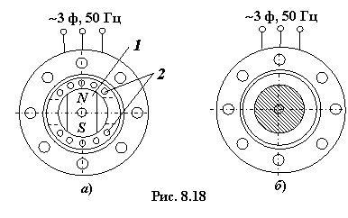

8.6. Синхронные микромашины
Синхронные микромашины (мощностью
от долей ватт до нескольких сотен ватт) широко применяют в качестве двигателей
в устройствах автоматики. Характерной особенностью синхронных микродвигателей является то, что частота вращения их роторов жёстко связана с частотой питания
сети f1. Поэтому их используют в различных устройствах, где требуется поддерживать постоянную частоту вращения (в
электрических часовых механизмах, в лентопротяжных механизмах самопишущих
приборов и киноустановок, в радиоаппаратуре и др.), а также в системах синхронной связи.
Синхронные микродвигатели выпускают
в трёх- и двухфазном исполнении. В отличие от обычных синхронных двигателей,
синхронные микродвигатели (СМД) не имеют обмотки возбуждения на роторе. В
зависимости от типа ротора различают СМД с постоянными магнитами, гистерезисные
и реактивные.
В ряде случаев синхронные
микромашины применяют в качестве генераторов, например, для получения
переменного тока повышенной частоты (индуктивные генераторы) и измерения
частоты вращения вала (синхронные тахогенераторы).

8.6.1. Синхронный микродвигатель
с постоянным магнитом/
Для создания магнитного поля на роторе размещают постоянный магнит 1 (рис. 8.18а), а в его полюсы – короткозамкнутую пусковую
обмотку 2. Вращающий момент в СМД возникает как результат взаимодействия
полюсов вращающегося магнитного поля статора с полюсами намагниченного ротора.
Свойства и рабочие характеристики СМД с постоянным магнитом не отличаются от свойств СД с электромагнитным возбуждением. Основным недостатком СМД такого типа является высокая стоимость постоянных магнитов, коэрцитивная сила которых Hc ≥ 50 кА/м.